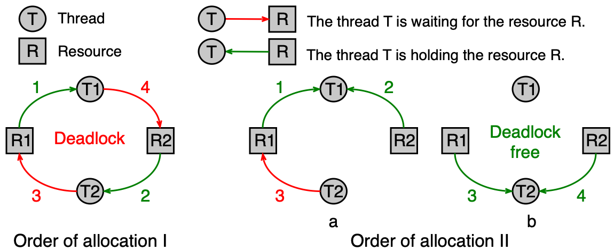
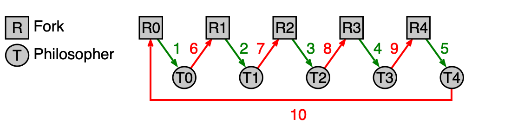
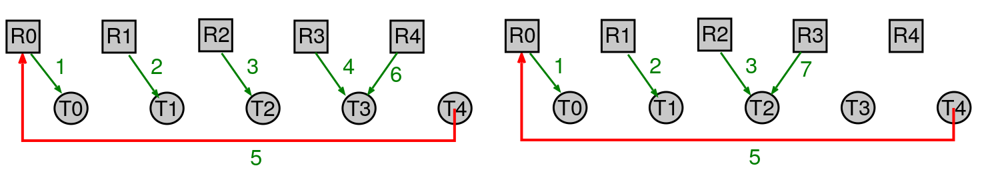
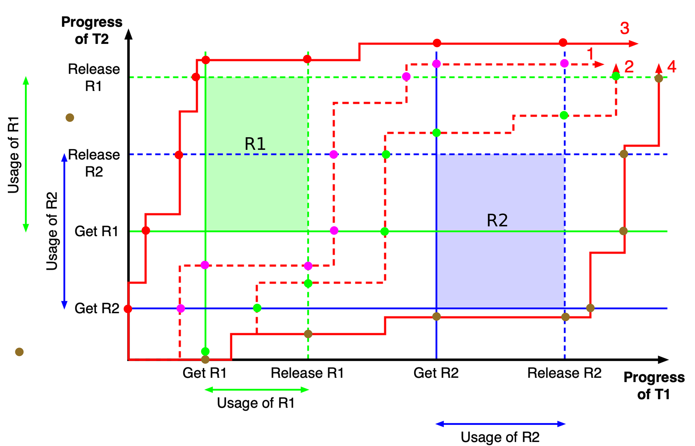
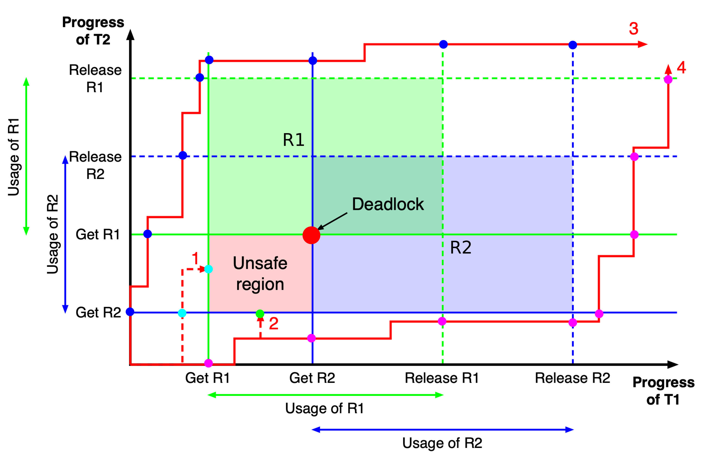

Uváznutí (deadlock)¶
Tato kapitola se věnuje jednomu z nejzáludnějších problémů paralelního programování — uváznutí vláken. Vysvětlíme si, co jsou výpočetní prostředky a jak se s nimi pracuje, zavedeme alokační graf jako nástroj pro vizualizaci konfliktů, odvodíme čtyři Coffmanovy podmínky, jejichž současné splnění je nutnou podmínkou uváznutí, a podrobně probereme čtyři strategie, jak se s uváznutím vypořádat — včetně Bankéřova algoritmu, který je klíčovým tématem u zkoušky.
Obsah stránky
Výpočetní prostředky¶
Co je výpočetní prostředek¶
Výpočetní prostředek (resource) je jakýkoli systémový zdroj, o který mohou vlákna soupeřit. Prostředky dělíme na:
- fyzické — hardware přímo přítomný v počítači (fyzická paměť, tiskárna, síťová karta),
- logické — softwarové abstrakce (proměnná, soubor, mutex, semafor, podmínková proměnná).
Pokud je prostředek sdílen více vlákny současně bez jakékoli koordinace, vznikají časově závislé chyby (race conditions). Proto musíme u sdílených prostředků zajistit výlučný přístup — v jednom okamžiku smí prostředek využívat nejvýše jedno vlákno.
V reálných programech vlákna velmi často potřebují přistupovat k více prostředkům najednou (například zapsat do databáze a zároveň aktualizovat log soubor), což zvyšuje riziko uváznutí.
Odnímatelné a neodnímatelné prostředky¶
Prostředky se z hlediska možnosti jejich vzetí zpět dělí na dvě kategorie:
| Typ prostředku | Anglický termín | Popis | Příklad |
|---|---|---|---|
| Odnímatelný | preemptable | Lze vláknu odebrat bez trvalých následků | Stránka fyzické paměti (lze odložit na disk) |
| Neodnímatelný | nonpreemptable | Odebrání by způsobilo chybu nebo ztrátu dat | Tiskárna (přerušení tisku uprostřed dokumentu) |
Většina prostředků je neodnímatelná
Právě proto je uváznutí tak závažný problém — u neodnímatelných prostředků nelze jednoduše "vzít zpět" to, co bylo vláknům přiděleno.
Sekvence kroků při použití prostředku¶
Každé vlákno, které chce pracovat se sdíleným prostředkem, musí projít třemi kroky:
- Alokace — vlákno požádá o prostředek prostřednictvím alokační funkce.
- Použití — vlákno prostředek aktivně využívá.
- Uvolnění — vlákno prostředek vrátí systému.
Alokace prostředku¶
Pokud je požadovaný prostředek volný, je vláknu okamžitě přidělen. Pokud je však prostředek již obsazen jiným vláknem, nastane jeden ze tří scénářů:
- Blokování bez časového omezení — vlákno čeká, dokud prostředek není volný (např.
mutex_lock(),cond_wait(),sem_wait()). - Blokování s časovým limitem — vlákno čeká maximálně danou dobu (např.
mutex_try_lock()); poté zjistí z návratové hodnoty, zda bylo úspěšné. - Neblokující pokus — vlákno se okamžitě dozví, zda byl prostředek přidělen (např.
fork(),malloc()), a rozhodne samo, jak pokračovat.
Uvolnění prostředku¶
Vlákna by měla alokované prostředky uvolňovat sama. Chování operačního systému se liší podle typu prostředku:
- Některé prostředky uvolní jádro OS automaticky při zániku procesu (např. paměť alokovaná přes
malloc()). - Jiné prostředky přetrvají i po zániku procesu a musí být uvolněny explicitně (např. sdílená paměť alokovaná přes
shmget()).
Předpoklady pro tuto kapitolu
V dalším výkladu budeme předpokládat, že:
- vlákna, která nemohou získat prostředek, čekají (blokující alokace),
- každé vlákno nakonec alokované prostředky po konečné době samo uvolní.
Definice uváznutí¶
Uváznutí (deadlock)
Uváznutí je situace, kdy několik vláken čeká na událost nebo prostředek, který může vyvolat nebo uvolnit pouze jedno z čekajících vláken. Žádné z uvázlých vláken nemůže pokračovat — všechna čekají navzájem na sebe.
Alokační graf¶
Alokační graf (resource allocation graph) je vizuální nástroj pro znázornění toho, které vlákno drží jaký prostředek a na co čeká. Je to orientovaný graf se dvěma typy uzlů:
- uzly prostředků (obvykle obdélníky),
- uzly vláken (obvykle kružnice).
Orientace hran vyjadřuje vztah:
- hrana od prostředku k vláknu — vlákno má prostředek přidělen (drží ho),
- hrana od vlákna k prostředku — vlákno čeká na přidělení daného prostředku.
Číslo u hrany může reprezentovat pořadí, ve kterém k alokaci došlo.

Smyčka v alokačním grafu = uváznutí
Každá smyčka (cyklus) v alokačním grafu představuje uváznutí. Vlákna tvořící smyčku čekají jedno na druhé a nemohou nikdy pokročit.
Pořadí alokace rozhoduje
Uváznutí závisí na pořadí, v jakém vlákna alokují prostředky. Stejný kód může někdy projít bez problémů a jindy uvíznout — záleží na přesném časování.
Coffmanovy podmínky¶
Coffmanovy podmínky jsou čtyři nutné podmínky, které musí být splněny všechny současně, aby mohlo dojít k uváznutí. Jsou pojmenovány po E. G. Coffmanovi, který je formuloval v roce 1971.
U zkoušky
Coffmanovy podmínky je nutné umět vyjmenovat, vysvětlit a říci, co se stane, pokud je aspoň jedna porušena. Jsou to také základ strategie prevence uváznutí.
Podmínka 1: Vzájemné vyloučení (mutual exclusion)¶
Každý prostředek je v daném okamžiku buď přidělen právě jednomu vláknu, nebo je volný. Prostředek nemůže být sdílen více vlákny najednou bez výlučného přístupu.
Tato podmínka plyne přímo z povahy neodnímatelných prostředků — nelze ji obvykle porušit bez rizika vzniku race conditions.
Podmínka 2: Neodnímatelnost (no preemption)¶
Prostředek, který byl již přidělen nějakému vláknu, mu nemůže být násilím odebrán. Prostředek musí vlákno uvolnit dobrovolně, až skončí s jeho použitím.
Podmínka 3: Drž a čekej (hold and wait)¶
Vlákno, které již drží nějaké prostředky, může žádat o další prostředky a při tom si ty stávající ponechat. Jinými slovy: vlákno nemusí alokovat vše potřebné najednou.
Podmínka 4: Kruhové čekání (circular wait)¶
Musí existovat smyčka dvou nebo více vláken, ve které každé vlákno čeká na prostředek přidělený dalšímu vláknu ve smyčce. Například vlákno T1 čeká na prostředek držený T2, T2 čeká na prostředek držený T3, a T3 čeká na prostředek držený T1.
Vztah podmínek
První tři podmínky jsou nutné, ale ne postačující — mohou nastat, aniž by nastalo uváznutí. Teprve čtvrtá podmínka (kruhové čekání) představuje samotné uváznutí. Pokud aspoň jedna ze čtyř podmínek není splněna, uváznutí nemůže nastat.
Strategie pro řešení uváznutí¶
Existují čtyři základní přístupy, jak se s problémem uváznutí vypořádat:
| Strategie | Podstata |
|---|---|
| Pštrosí strategie | Problém ignorujeme |
| Prevence uváznutí | Porušíme aspoň jednu Coffmanovu podmínku |
| Předcházení vzniku uváznutí | Pečlivou alokací udržujeme systém v bezpečném stavu |
| Detekce a zotavení | Uváznutí připustíme, detekujeme ho a odstraníme |
Pštrosí strategie¶
Pštrosí strategie (ostrich algorithm) spočívá v tom, že problém uváznutí jednoduše ignorujeme. Pokud přeci jen k uváznutí dojde, vyžaduje se zásah uživatele nebo administrátora (typicky ruční ukončení zaseknutého procesu).
Tato strategie se uplatňuje za následujících podmínek:
- systém obsahuje velký počet různě se chovajících vláken a různých prostředků,
- pravděpodobnost výskytu uváznutí je relativně malá,
- náklady na implementaci sofistikovanějšího řešení by byly příliš vysoké.
V praxi ji používá většina univerzálních operačních systémů (MS Windows, Linuxové systémy apod.):
- Jádro OS je navrženo jako "deadlock free" (bez uváznutí).
- Na úrovni uživatelských procesů a vláken se problém řeší jen částečně — různými systémovými limity (viz unixový příkaz
ulimit -a).
Fault-tolerant systémy
Pštrosí strategie není přijatelná pro systémy vyžadující vysokou spolehlivost (fault-tolerant systems), jako jsou řídicí systémy letadel, nemocniční přístroje nebo jaderné elektrárny.
Prevence uváznutí¶
Prevence uváznutí (deadlock prevention) je strategie, která se snaží porušit aspoň jednu z Coffmanových podmínek tak, aby uváznutí principiálně nemohlo nastat. Porušení se navrhuje ve fázi návrhu nebo implementace programu.
Porušení podmínky vzájemného vyloučení¶
Pokud je prostředek používán více vlákny pro čtení i zápis, pak tuto podmínku v praxi nelze porušit bez rizika vzniku časově závislých chyb. Prostředky, které vyžadují výlučný přístup, jednoduše nelze sdílet.
Porušení podmínky neodnímatelnosti¶
Tento přístup je vhodný pouze tehdy, pokud lze uložit stav prostředku tak, aby mohl být později obnoven do původního stavu. Klasickým příkladem je sdílení jádra CPU více vlákny — přepnutí kontextu (context switch) "odejme" vláknu CPU, ale celý stav vlákna je uložen a lze ho obnovit.
Porušení podmínky "drž a čekej"¶
Pokud vlákno dopředu zná všechny prostředky, které bude potřebovat, lze všechny prostředky alokovat najednou v jednom kroku před jejich použitím. Vlákno buď získá vše, co potřebuje, nebo začne čekat — nikdy nenastane situace, kdy drží část prostředků a čeká na zbytek.
Nevýhodou je horší využití prostředků — vlákno drží prostředky, které ještě momentálně nepotřebuje, a tím znemožňuje jejich použití jinými vlákny.
Porušení podmínky kruhového čekání¶
Toto je nejpraktičtější přístup k prevenci uváznutí. Myšlenka spočívá ve vzestupném číslování prostředků a jejich přidělování pouze v rostoucím pořadí čísel.
Formálně: mějme množinu prostředků R = {R1, ..., Rm} a bijektivní číslování F: R -> N (každý prostředek dostane unikátní číslo). Vlákno smí požádat o prostředek Rj pouze tehdy, pokud pro každý prostředek Ri, který vlákno již drží, platí F(Rj) > F(Ri).
Tím přidělování prostředků nikdy nevytvoří smyčku v alokačním grafu, protože pořadí alokace je vždy jednoznačně dáno číslováním.
Omezení
Vhodné číslování prostředků nemusí vždy existovat — závisí na struktuře požadavků programu. Tato technika se řeší ve fázi návrhu nebo kompilace programu.
Příklad: Večeřící filosofové a kruhové čekání¶
Klasický příklad demonstruje problém pěti filosofů, kteří sedí u kulatého stolu. Každý filosof potřebuje ke konzumaci dvě vidličky (prostředky), ale mezi každými dvěma filosofy leží pouze jedna vidlička.
Naivní řešení (s uváznutím): Každý filosof nejprve vezme levou vidličku, pak čeká na pravou. Pokud všichni filosofové "současně" vezmou levou vidličku, každý čeká na pravou — ta však patří sousedovi, který čeká na svou pravou. Nastane kruhové čekání.

Řešení bez uváznutí: Vidličkám přiřadíme čísla (F: vidlička_i -> i). Každý filosof musí vidličky alokovat ve vzestupném pořadí čísel. Jeden z filosofů tak musí vzít nejprve "pravou" (vyšší číslo) vidličku, čímž se cyklus přeruší a k uváznutí nemůže dojít.

Předcházení vzniku uváznutí¶
Předcházení vzniku uváznutí (deadlock avoidance) je sofistikovanější přístup, který na rozdíl od prevence neomezuje způsob alokace staticky. Místo toho OS při každém požadavku na prostředek dynamicky rozhoduje, zda přidělení prostředku nepovede k uváznutí.
Motivace: 2D graf průběhu dvou vláken¶
Pro pochopení intuice uvažujme dvě vlákna T1 a T2, která sdílejí prostředky R1 a R2. T1 alokuje R1 a R2 v tomto pořadí, T2 naopak v pořadí R2, R1.
Průběh jejich souběžného vykonávání lze znázornit dvourozměrným grafem: vodorovná osa odpovídá operacím T1, svislá osa operacím T2. Aktuální stav systému je bod v tomto grafu a vývoj systémem je trajektorie.
Protože R1 ani R2 nelze sdílet (vzájemné vyloučení), existují v grafu zakázané oblasti — oblasti, kde by obě vlákna používala stejný prostředek současně.

Příklad 1 (bezpečný stav): Pokud T1 uvolní R1 dříve, než požádá o R2, nevznikne žádná nebezpečná (unsafe) oblast a všechny trajektorie 1–4 jsou bezpečné.

Příklad 2 (nebezpečný stav): Pokud se prodlouží doba, po kterou T1 drží R1 (a požaduje R2), vznikne v grafu nebezpečná (unsafe) oblast — "past". Trajektorie 1 a 2, které do ní vstoupí, skončí uváznutím. Trajektorie 3 a 4, které se nebezpečné oblasti vyhnou správnou alokací, projdou bezpečně.
Co z příkladů plyne
Klíčem k bezpečnému průběhu je znalost požadavků vláken na prostředky. Čím více informací o požadavcích OS má, tím lépe může rozhodovat:
- Bez znalostí požadavků — uváznutí nelze předejít.
- Znalost maximálních požadavků — uváznutí lze předejít, ale prostředky budou méně efektivně využity (některé bezpečné trajektorie nebudou povoleny).
- Znalost požadavků + informace o společném využívání — uváznutí lze předejít a prostředky jsou využívány lépe (povoleny jsou i trajektorie 1–2, pokud lze dokázat bezpečnost).
Formální popis stavu systému¶
Pro formální popis stavu systému s n vlákny a m typy prostředků zavádíme následující datové struktury:
| Symbol | Název | Popis |
|---|---|---|
E |
Vektor existujících prostředků (existence vector) | E[i] = celkový počet prostředků typu i v systému |
F |
Vektor volných prostředků (free vector) | F[i] = počet volných prostředků typu i |
Q |
Matice požadavků (request matrix) | Q[k][i] = maximální počet prostředků typu i, které vlákno k může celkem potřebovat |
A |
Matice přidělených prostředků (allocation matrix) | A[k][i] = počet prostředků typu i aktuálně přidělených vláknu k |
M |
Matice chybějících prostředků (missing/need matrix) | M = Q - A, tj. M[k][i] = kolik prostředků typu i vlákno k ještě potřebuje |
Pro konzistentní stav systému musí platit:
Ei = Fi + sum(A[k][i], k=1..n) pro vsechna i = 1..m
(vsechny prostredky jsou bud volne nebo pridelene)
Q[k][i] <= E[i] pro vsechna k, i
(zadne vlakno nepozaduje vice prostredku nez kolik jich v systemu existuje)
A[k][i] <= Q[k][i] pro vsechna k, i
(zadne vlakno si nealokuje vice nez pozadovalo)
Bezpečný stav a Bankéřův algoritmus¶
U zkoušky
Bankéřův algoritmus a určení bezpečného stavu jsou nejčastější úlohy u zkoušky. Musíte umět:
- Sestavit matice Q, A, M a vektory E, F.
- Algoritmem bezpečnosti zjistit, zda je stav bezpečný.
- Rozhodnout, zda přidělit nebo zamítnout konkrétní požadavek vlákna.
Bezpečný stav (safe state) je takový stav systému, ve kterém existuje alespoň jedna posloupnost přidělování prostředků vláknům, která garantuje postupné uspokojení potřeb všech vláken — žádné vlákno neuvázne.
Bankéřův algoritmus (banker's algorithm, Dijkstra 1965) funguje takto: kdykoliv vlákno požádá o prostředky, OS prostředky "zkusmo" přidělí a ověří, zda výsledný stav je stále bezpečný. Pokud ano, přidělení potvrdí. Pokud ne, vlákno bude čekat.
Algoritmus pro zjištění bezpečnosti stavu:
1. Existuje neuspokojenou vlakno T, pro ktere plati M[T] <= F
(tj. vsechny jeho zbyvajici pozadavky lze pokryt volnymi prostredky)?
- ANO: oznacime T jako hotove, pridate A[T] zpet do F (vlakno skonci
a uvolni prostredky), opakujeme bod 1.
- NE: pokracujeme na bod 2.
2. Byla uspokojena vsechna vlakna?
- ANO: stav je bezpecny.
- NE: stav neni bezpecny (zbyvajici vlakna jsou potencialne uvazla).
Příklad: Bankéřův algoritmus — krok za krokem¶
Příklad: Je stav systému bezpečný?
Mějme systém se 4 vlákny (T1–T4) a 3 typy prostředků (R1, R2, R3).
Vstupní stav:
| Matice požadavků Q | Matice přidělených prostředků A | |||
|---|---|---|---|---|
| R1 | R2 | R3 |
| Vlákno | Q[R1] | Q[R2] | Q[R3] |
|---|---|---|---|
| T1 | 3 | 2 | 6 |
| T2 | 6 | 1 | 3 |
| T3 | 3 | 1 | 4 |
| T4 | 4 | 2 | 2 |
| Vlákno | A[R1] | A[R2] | A[R3] |
|---|---|---|---|
| T1 | 1 | 0 | 0 |
| T2 | 6 | 1 | 2 |
| T3 | 2 | 1 | 1 |
| T4 | 0 | 0 | 2 |
Vektor existujících prostředků: E = [9, 3, 6]
Vektor volných prostředků: F = [0, 1, 1]
Matice chybějících prostředků M = Q - A:
| Vlákno | M[R1] | M[R2] | M[R3] |
|---|---|---|---|
| T1 | 2 | 2 | 6 |
| T2 | 0 | 0 | 1 |
| T3 | 1 | 0 | 3 |
| T4 | 4 | 2 | 0 |
Krok 1: F = [0, 1, 1] — lze uspokojit T2 (potřebuje [0, 0, 1])?
Ano: M[T2] = [0, 0, 1] <= [0, 1, 1]. T2 označíme jako dokončené, uvolníme jeho prostředky:
F = F + A[T2] = [0, 1, 1] + [6, 1, 2] = [6, 2, 3]
Krok 2: F = [6, 2, 3] — lze uspokojit T3 (potřebuje [1, 0, 3])?
Ano: [1, 0, 3] <= [6, 2, 3]. T3 dokončeno, uvolníme prostředky:
F = [6, 2, 3] + [2, 1, 1] = [8, 3, 4]
Lze uspokojit T4 (potřebuje [4, 2, 0])? Ano: [4, 2, 0] <= [8, 3, 4]. T4 dokončeno:
F = [8, 3, 4] + [0, 0, 2] = [8, 3, 6]
Krok 3: F = [8, 3, 6] — lze uspokojit T1 (potřebuje [2, 2, 6])?
Ano: [2, 2, 6] <= [8, 3, 6]. T1 dokončeno.
Výsledek: Bezpečná posloupnost je T2 → T3 → T4 → T1. Systém je v bezpečném stavu.
Detekce a zotavení¶
Pokud nemáme k dispozici informace o tom, které prostředky budou vlákna používat (nebo jak dlouho), nelze uplatnit prevenci ani předcházení uváznutí. V takovém případě se používá strategie detekce a zotavení (detection and recovery): uváznutí připustíme, ale pravidelně ho detekujeme a následně odstraňujeme.
Detekce uváznutí¶
Algoritmus pro detekci uváznutí pracuje s aktuálním stavem systému — vektory E a F, maticí přidělených prostředků A a maticí aktuálních požadavků Q_c (current request matrix; na rozdíl od Bankéřova algoritmu neobsahuje maximální požadavky, ale to, co vlákna právě nyní žádají).
Algoritmus detekce:
1. Vytvorime kopii C vektoru F (aktualne volne prostredky).
2. Na zacatku jsou vsechna vlakna neoznacena.
3. Oznacime vsechna vlakna, ktera momentalne nezadaji zadny prostredek
(radek Q_c[T] je nulovy).
4. Existuje neoznacene vlakno T, pro ktere plati Q_c[T] <= C?
- ANO: vlakno T oznacime, jeho alokace A[T] pridame ke C,
opakujeme bod 4.
- NE: pokracujeme na bod 5.
5. Byla oznacena vsechna vlakna?
- ANO: k uvaznutí nedoslo.
- NE: doslo k uvaznutí; neoznacena vlakna jsou uvazla.
Příklad: Detekce uváznutí
Systém s 5 prostředky (R1–R5) a 4 vlákny (T1–T4):
Matice přidělených prostředků A:
| Vlákno | R1 | R2 | R3 | R4 | R5 |
|---|---|---|---|---|---|
| T1 | 0 | 1 | 0 | 0 | 1 |
| T2 | 0 | 0 | 1 | 0 | 1 |
| T3 | 0 | 0 | 0 | 0 | 1 |
| T4 | 1 | 0 | 1 | 0 | 1 |
Matice aktuálních požadavků Q_c:
| Vlákno | R1 | R2 | R3 | R4 | R5 |
|---|---|---|---|---|---|
| T1 | 1 | 0 | 1 | 1 | 0 |
| T2 | 1 | 1 | 0 | 0 | 0 |
| T3 | 0 | 0 | 0 | 1 | 0 |
| T4 | 0 | 0 | 0 | 0 | 0 |
Vektor existujících prostředků: E = [2, 1, 1, 2, 1]
Volné prostředky: C = [0, 0, 0, 0, 1]
Krok 1: T4 má nulový řádek Q_c → označíme ho ihned (nežádá žádný prostředek).
Krok 2: Zkusíme uspokojit zbývající vlákna z C = [0, 0, 0, 0, 1]:
- T3 žádá [0, 0, 0, 1, 0] — nelze (C[R4] = 0 < 1).
- T1 žádá [1, 0, 1, 1, 0] — nelze.
- T2 žádá [1, 1, 0, 0, 0] — nelze.
Označíme T4 a přidáme A[T4] = [1, 0, 1, 0, 1]: C = [1, 0, 1, 0, 2].
Opakujeme: žádné z T1, T2, T3 není možné uspokojit — T3 stále žádá [0, 0, 0, 1, 0] a C[R4] = 0.
Výsledek: T4 je označené, T1, T2, T3 jsou neoznačená → jsou uvázlá.
Nástroje OS pro detekci uváznutí¶
Standardní operační systémy poskytují několik nástrojů pro sledování stavu vláken:
ps— zobrazení stavu procesů a vláken,gstack,gdb(debugger) — výpis zásobníků vláken (stack trace), které odhalí, na co vlákno čeká,- Valgrind a podobné nástroje — profilování a ladění paralelních programů.
Zotavení z uváznutí¶
Po detekci uváznutí je třeba ho odstranit. Existují tři základní přístupy:
1. Ukončení všech uvázlých vláken
Nejjednodušší řešení — typické, pokud uživatel nebo administrátor problém ručně zjistí (např. zasláním signálu SIGKILL). Prostředky se uvolní okamžitě.
2. Postupné ukončování uvázlých vláken Uvázlá vlákna se ukončují jedno po druhém, přičemž po každém ukončení se znovu spustí detekční algoritmus. Tento postup pokračuje, dokud uváznutí trvá. Je šetrnější, ale pomalejší.
3. Zotavení pomocí návratu a restartu (rollback and restart) Princip: uvázlá vlákna jsou vrácena do některého z předchozích stavů (checkpoint) a znovu spuštěna. Systém si musí pravidelně ukládat svůj stav (checkpoint mechanismus). Díky nedeterminismu paralelního zpracování je pravděpodobnost, že stejné uváznutí nastane znovu, relativně malá.
Složitost zotavení
Zatímco detekci uváznutí lze implementovat relativně snadno (algoritmicky), samotné zotavení může být velmi složité — obzvlášť rollback, který vyžaduje netriviální infrastrukturu pro ukládání a obnovu stavu.
Shrnutí¶
- Výpočetní prostředky (fyzické i logické) vyžadují výlučný přístup; vlákna je používají v sekvenci: alokace → použití → uvolnění.
- Neodnímatelné prostředky jsou kritičtější — nemohou být odebrány bez rizika poškození dat nebo stavu.
- Alokační graf zobrazuje, která vlákna drží nebo čekají na jaké prostředky; cyklus v grafu = uváznutí.
- Coffmanovy čtyři podmínky (vzájemné vyloučení, neodnímatelnost, drž a čekej, kruhové čekání) musí být splněny všechny současně, aby mohlo nastat uváznutí. Porušení jediné z nich uváznutí znemožní.
- Pštrosí strategie je ignorování problému — praktická pro univerzální OS, nepřijatelná pro kritické systémy.
- Prevence porušuje jednu z Coffmanových podmínek staticky; nejpraktičtějším přístupem je vzestupné číslování prostředků (porušení kruhového čekání).
- Předcházení (Bankéřův algoritmus) dynamicky rozhoduje o každém přidělení prostředku tak, aby systém nikdy nevstoupil do nebezpečného stavu.
- Bezpečný stav je takový, ze kterého existuje bezpečná posloupnost přidělení prostředků uspokojující všechna vlákna.
- Detekce a zotavení připouští uváznutí, ale pravidelně ho odhaluje algoritmem pracujícím s maticemi A a Q_c a vektorem volných prostředků C.
- Zotavení lze provést ukončením uvázlých vláken (jednorázově nebo postupně) nebo mechanismem rollback a restart.
Klíčové pojmy¶
- Výpočetní prostředek (resource) — fyzický nebo logický systémový zdroj, ke kterému vlákna přistupují a jehož sdílení je třeba koordinovat.
- Odnímatelný prostředek (preemptable resource) — prostředek, který lze vláknu odebrat bez rizika trvalé ztráty dat (např. stránka fyzické paměti).
- Neodnímatelný prostředek (nonpreemptable resource) — prostředek, který nelze odebrat bez rizika poškození dat nebo stavu (např. tiskárna).
- Alokace prostředku — přidělení prostředku vláknu na základě jeho žádosti; pokud je prostředek obsazen, vlákno čeká nebo dostane chybu.
- Alokační graf (resource allocation graph) — orientovaný graf s uzly prostředků a vláken; hrana prostředek→vlákno = vlákno drží prostředek; hrana vlákno→prostředek = vlákno čeká.
- Uváznutí (deadlock) — situace, kdy skupina vláken čeká na události nebo prostředky, které může vyvolat pouze jedno z čekajících vláken; žádné z nich nemůže pokračovat.
- Coffmanovy podmínky — čtyři nutné podmínky uváznutí: vzájemné vyloučení, neodnímatelnost, drž a čekej, kruhové čekání.
- Vzájemné vyloučení (mutual exclusion) — prostředek je v daném okamžiku přidělen nejvýše jednomu vláknu.
- Neodnímatelnost (no preemption) — přidělený prostředek nelze vláknu násilím odebrat, musí ho uvolnit dobrovolně.
- Drž a čekej (hold and wait) — vlákno, které drží prostředky, může žádat o další, aniž by muselo stávající uvolnit.
- Kruhové čekání (circular wait) — cyklus vláken, kde každé čeká na prostředek držený dalším vláknem v cyklu.
- Pštrosí strategie (ostrich algorithm) — ignorování problému uváznutí; vhodné tam, kde je uváznutí vzácné a řešení příliš nákladné.
- Prevence uváznutí (deadlock prevention) — statické porušení jedné z Coffmanových podmínek ve fázi návrhu programu.
- Vzestupné číslování prostředků — technika prevence kruhového čekání: vlákna smí alokovat prostředky pouze v rostoucím pořadí přiřazených čísel.
- Předcházení uváznutí (deadlock avoidance) — dynamické rozhodování o každém přidělení prostředku tak, aby systém nikdy nevstoupil do nebezpečného stavu.
- Bezpečný stav (safe state) — stav systému, ve kterém existuje alespoň jedna posloupnost přidělování prostředků, která zaručí dokončení všech vláken.
- Nebezpečný stav (unsafe state) — stav, ze kterého může (ale nemusí) nastat uváznutí; žádná bezpečná posloupnost neexistuje.
- Bankéřův algoritmus (banker's algorithm) — algoritmus předcházení uváznutí od Dijkstry; před každým přidělením prostředku ověří bezpečnost výsledného stavu.
- Vektor existujících prostředků E (existence vector) — udává celkový počet prostředků každého typu v systému.
- Vektor volných prostředků F (free vector) — udává počet aktuálně volných prostředků každého typu.
- Matice požadavků Q (request matrix) — obsahuje maximální požadavky jednotlivých vláken na prostředky.
- Matice přidělených prostředků A (allocation matrix) — obsahuje aktuálně alokované prostředky pro každé vlákno.
- Matice chybějících prostředků M / Need matrix — M = Q - A; udává, kolik prostředků ještě každé vlákno potřebuje.
- Matice aktuálních požadavků Q_c (current request matrix) — používaná při detekci; obsahuje prostředky, které vlákna právě nyní aktivně požadují (ne maximum).
- Detekce uváznutí (deadlock detection) — pravidelné spouštění algoritmu, který na základě aktuálního stavu systému odhalí existující uváznutí.
- Zotavení z uváznutí (deadlock recovery) — odstranění uváznutí ukončením uvázlých vláken nebo mechanismem rollback a restart.
- Rollback a restart — obnova uvázlého vlákna do dříve uloženého stavu (checkpointu) a jeho opětovné spuštění.
- Checkpoint — pravidelně ukládaný snímek stavu systému nebo vlákna, který umožňuje obnovu při zotavení z uváznutí.
ulimit -a— unixový příkaz zobrazující systémové limity procesů; jeden z nástrojů částečného řešení uváznutí na úrovni uživatelského prostoru.